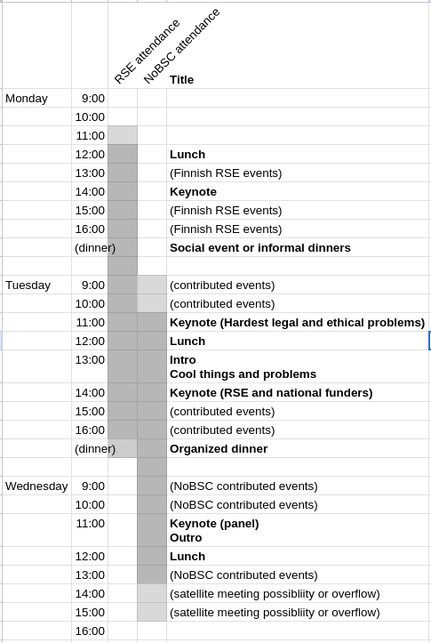

Nordic Basic Scientific Computing 2026
Finnish RSE Meetup
The first half is a Finnish RSE meetup. This page will have more info on this.
Practical info
Location
Aalto University Campus, (Espoo), Helsinki Area. If you search
Dipoli it should find it, the address is Otakaari 24, 02150
Espoo.
Food
Reservations at restaurants in the campus area. These restaurants can generally cater to all common diets, including vegetarian, vegan, gluten free, and lactose free. There are also two grocery stores at the metro station (A entrance).
Map
Tourist information and other activities
Wikivoyage Helsinki is usually pretty accurate and has information about the area and other sights to see.
Hotels
There are various hotels within easy walking distance. We don’t have any particular discounts. “Radison Blu Otaniemi” is the default location for university visitors. Other hotels in Helsinki downtown are fine also, the metro trip is 11 minutes (and costs ~3 euros).
Arrival
tldr: Aalto University is at the “Aalto University” metro stop. An “ABC” ticket manages the train from airport AND metro (and trams, busses, etc).
Air: Helsinki Airport. Between the airport and Aalto University, plan for max 1.5 hours (less than one hour is possible if you are efficient). From the airport, follow signs to the train station. Board a train and immediately use a contactless payment card to buy an ABC ticket at a card reader; this will get you all the way to the university (see public transport). Take the first train that comes (either way gets to downtown in about the same time). From the main station, walk to the connected metro station. Take a metro to the stop Aalto University (direction Tapiola or Kivenlahti), then continue in section “public transport” below.
Ferry: From Tallinn or Stockholm, there are ferries. Expect well under an hour to get from the ferry harbors to Aalto University. Take trams to the metro, but from each harbor walking to the metro is reasonable (not too far and nice walks). (Some attendees are also attending the Nordic e-infrastructure Conference in Tallinn on 27-29 May, they will be taking ferries from Tallinn the evening of 29 May. More info to be announced)
Bus, Train, etc. within Finland: You probably know how to get to the center of Helsinki. Follow public transit below.
Private vehicle: There isn’t free parking, but there are paid lots around.
Public transport: The public transport system is good and easy to use. The metro stop name is “Aalto University”, and the A exit is closer to us. Tickets can be bought at ticket machines, or via the “HSL App”. Aalto University is in the zone B, downtown is in the zone A, the airport in zone C, and tickets last a bit more than an hour and work on any public bus, train, metro, or tram (and as many transfers as you need). AB zone tickets cost about 3€.
If coming from airport: use single tickets, day tickets not worth it even with one extra trip to/from downtown.
Now, all tickets can be bought using contactless payment cards (details). Select the appropriate zones (AB or ABC) at the blue readers (before getting on the metro, after boarding bus/train/tram), then show your card. More info and ways to pay.
Registration
Option 1: There is no registration fee, but you have to pay for your own food, snacks, and coffee.
Option 2: We have a registration fee designed to cover just the cost of your food, snacks, dinner, and coffee. (ASC covers fixed costs of the facilities.)
We start with option 1 and option 2 is used during reconfirmation if we get enough registrations.
Maximum capicity 50 but ideal size 30.
Registration link
Not yet opened.
Call for sessions
Everyone is asked to contribute to “cool things and problems”.
Remember, the theme of this conference is how we actually work and “how the sausage is made”, not “advertising our sausage”. You can present ideas, undone things, things you need advice on, and so on. You can request lightning talks, short talks, long talks, breakout sessions, discussions, etc.
Submissions will open later.
Submit a session
You’ll be able to submit talks/demos/workshops/etc. you’d like to give.
Our facilities include one main room (reserved), one breakout room (reserved), and various other places you can find in the building lobby areas for smaller discussion sessions (not reserved).
Session inspirations
You are allowed to come with a question instead of a solution.
Introduction to how my team/organization works.
Cool procedure/practice/tool we have developed.
Cool software I have developed.
Book/video/event review and summary.
Problem or concern I am facing now.
Demo and/or hack times.
You can say how long your session should be: lightning talk (5 min), 30 min, longer breakout discussion/workshop. You can submit multiple events and your priority for each.
Cool things and problems
Everyone will have a chance to (and be encouraged) to contribute to the session “Cool things and problems”. In this, each team presents three cool things they are doing, and three problems they are facing. We can then see.
Unconference
We will also save some time for an “unconference”: sessions request right during the conference. Perhaps you’ll ask someone to make a session based on informal discussions.
Request a session
If you have things you would like to hear/do, but can’t organize yourself, please submit this as part of your registration or via the submission form and we’ll see if we can find someone to present. We’ll probably contact all registrants to see who can take one of them.
Schedule
When to attend
For NoBSC for service staff, attend 3 Feb until lunch on Feb 4.
For the Finnish-RSE meetup, attend lunch (or earlier) on 2 Feb to lunch or dinner on 3 Feb.
The overlapping day is events of interest to both groups.
You are of course welcome to attend more, if you would like.
Timetable
Below is a draft of our schedule plan. This is in early stages and will be improved later (including making it not a spreadsheet screenshot).

Aalto Scientific Computing (ASC) invites you to its early 2026 meetup - a gathering of everyone interested in supporting scientific computing (and a celebration of the diverse work that makes it all possible). Aalto Otaniemi Campus, 2-4 February 2026.
The first half is a “Finnish RSE meetup” , the second half is “NoBSC” and more targeted to service staff. The middle day has events that are interesting to both audiences. People are welcome to attend both halves, but we expect many attendees will only attend one half or the other.
Who is this for? We especially welcome people who support academic research through computing and data expertise in universities and research institutions , for example those in local HPC or RSE teams, cloud computing, and other computing services for researchers. But everyone is welcome: including Academic researchers, data managers, open science experts and anyone interested in these topics.
This isn’t a time to advertise how great our sausage is. It’s a time to talk about how our sausage is made (the good and bad things) so we can all get better at it.
Topics
We can talk about whatever is interesting to us: from past achievements, to future directions.
Academic experience as a research engineer.
Practical support (research software engineering, both practices and how we run our teams).
HPC cluster management (day to day problems and usability for small projects and new users).
Teaching (practical teaching done for the previous two categories).
Schedule (general plan)
See also
Day 0 (Su, 1 Feb 2026): If anyone arrives early, grilling dinner in a Finnish forest (if enough people want to brave the cold).
Day 1 (Mo, 2 Feb 2026): Finnish RSE meetup
Day 2 (Tu, 3 Feb 2026): RSE/NoBSC day: events, lunch, evening dinner, some social activities scattered between.
Day 3 (We: 4 Feb 2026): events 9-12, lunch.
Sessions known so far:
Plenty of time for submitted events and networking.
Cool things and problems: each organization presents three cool things they have done lately and three problems they are facing right now. This serves as a basis for networking during the rest of the event.
Panel discussion with junior computational researchers: Panel discussions are usually full of the most senior people the organizers can find. In this discussion, we’ll hear from junior researchers, about how usable they find computing systems and the onboarding process.
Quick info
See also
Location: Dipoli, Aalto University, Espoo, Helsinki area, Finland
Price: Free (you pay your own food) or at-cost (depending on the number of registrations). Aalto Scientific Computing sponsors the facilities.
Food: Reservations at restaurants in the campus area.
Registration: To be opened later.